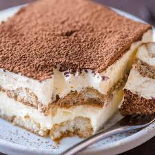

Tiramisu
This traditional Italian dessert is sure to be a crowd pleaser. It has alcohol, sugar, and best of all coffee. If you have an abundance of coffee lovers in your family, this dessert encompasses all the best parts of their favorite latte.

Ingredients
- Egg Yolks
- Sugar
- Milk
- Cream
- Vanilla
- Marscapone
- Coffee
- Rum
- Ladyfingers
- Cocoa Powder
Steps to Make
- Make the filling: Cook egg yolks, sugar, and milk until thickened. Then chill for an hour. After it has chilled, mix in marscapone.
- Make whipped cream by beating heavy cream and vanilla until there are peaks.
- Soak the ladyfingers in coffee and rum.
- Assemble the tiramisu by putting ladyfingers in the bottom of a baking dish. Spread half the marscapone mixture over them, then half the whipped cream and repeat. Then dust with cocoa powder.